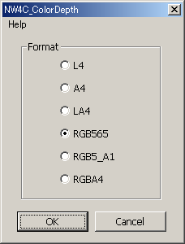

In Photoshop, the RGB and alpha components each have a color depth of 8 bits (256 levels). But on the CTR, the color depth is only 1 to 6 bits when the format is L4, A4, LA4, RGB565, RGB5_A1, or RGBA4.
Use this filter to apply the color depth corresponding to the format.
Select all channels, and then from the Filter menu select NintendoWare for CTR > NW4C_ColorDepth. A dialog box appears.

Select the format using the radio buttons.
The L4 and LA4 formats can be selected only if the image mode is set to Grayscale, or if the R, G, and B color components are all set to the same value for the image.
The A4 format can be selected only if the image mode is set to Grayscale or if there is an alpha channel.
The RGB565, RGB5_A1, and RGBA4 formats can be selected if the image mode is set to RGB Color.
Click OK to run the filter.
The filter only runs if the image mode is Grayscale or RGB Color.
The filter cannot be run on files that use 16 bits per channel.
If an alpha channel is present, be sure to run the filter with all channels selected. (You can hold SHIFT and click to select multiple channels.)
You cannot run the filter if there are two or more alpha channels.
If there are multiple View layers, merge them before running the filter.
If the image includes only layers and no background, the pixel opacity is processed as the alpha if there is no alpha channel.
Use the following procedure to create a mipmap image to which the color depth filer has been applied.
CONFIDENTIAL